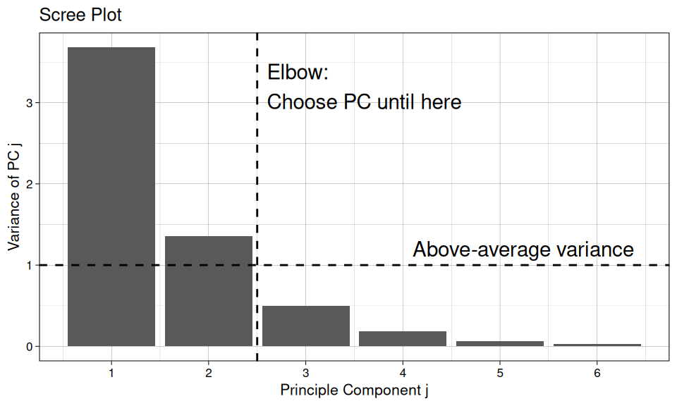
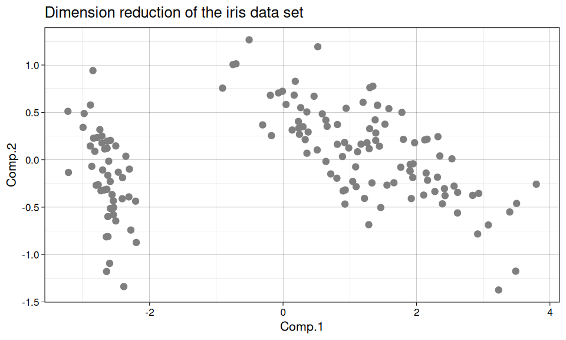

Multivariate Statistics
This page is based on the lecture Applied Multivariate Statistics 401-0102-00L held by Fabio Sigrist at ETH Zurich.
Principal Component Analysis
Principal component analysis (PCA) aims at reducing a large number of variables to a smaller number while preserving as much variation as possible. This can be useful for visualizing data, but also to reduce the computational burden for other statistical techniques as well as simplifying regression problems by reducing collinearity.
Model Definition
The idea is to transform the data matrix \(\pmb{X} \in \mathbb{R}^{n\times q}\) with the orthogonal loadings matrix \(\pmb{A} \in \mathbb{R}^{q\times q}\) such that the transformed values \(\pmb{Y} \in \mathbb{R}^{n\times q}\), called scores, have maximal variance along the axes. \[ \pmb{Y} = \pmb{X}\pmb{A} \] The k-th column in \(\pmb{Y}\) and \(\pmb{A}\) correspond to the scores and loadings of the k-th principle component, respectively. The loadings of each component \(k\) are normalized \[ \Sigma_{j=1}^q a_{jk}^2 = 1 \] and the mean of each variable is zero. This can be achieved by subtracting the mean of the data. \[ E(X_1) = \ldots = E(X_q) = 0 \] Principle components are ordered according to their variances, with the first principle component having the largest. In addition, all subsequent principle components have to be orthogonal to the previous components.
Computation
There are multiple approaches to compute principle components, here, spectral decomposition of the covariance matrix \(\pmb{S} \in \mathbb{R}^{q\times q}\) will be used. The spectral decomposition \[ \pmb{S} = \pmb{A}\pmb{D}\pmb{A}^T \] yields the matrix \(\pmb{A} \in \mathbb{R}^{q\times q}\), in which the columns \(\pmb{a}_k\) are the eigenvectors, and the matrix \(\pmb{D} \in \mathbb{R}^{q\times q}\). \(\pmb{D}\) is a diagonal matrix whose elements \(\lambda_k\) are the eigenvalues to \(\pmb{a}_k\) and correspond to the variance of the associated eigenvector. Thus \[ \pmb{S}\pmb{a}_k = \lambda_k\cdot\pmb{a}_k \] The algorithm to compute PCA with spectral decomposition is:
- Calculate the eigenvalues \(\lambda_k\) and eigenvectors \(\pmb{a}_k\) from the sample covariance matrix \(\pmb{S}\)
- Sort the eigenvalues in descending order and order the corresponding eigenvectors the same way
- The k-th principle component is given by \[ \pmb{y}_k = \pmb{X}\pmb{a}_k \]
Properties
The sample variance of principle component \(k\) equals \(\lambda_k\), the k-th largest eigenvalue of \(\pmb{S}\). The total sample variance of all \(q\) variables equals \[ \mathrm{Tr}\left(\pmb{S}\right) = \mathrm{Tr}\left(\pmb{D}\right) = \Sigma_{j=1}^q \lambda_j \] and the first \(k\) principle components explain a fraction of \[ \frac{\Sigma_{j=1}^k\lambda_j}{\Sigma_{j=1}^q\lambda_j} \] of the total variance. The sample correlations between different \(\pmb{y}_k\) are zero, since the eigenvectors, by definition, are orthogonal. \[ \mathrm{Cor}(\pmb{y}_i, \pmb{y}_j) = 0, i \neq j \] The signs of the loadings are arbitrary, since \[ \pmb{S} = \pmb{A}\pmb{D}\pmb{A}^T = (-\pmb{A})\pmb{D}(-\pmb{A})^T \]
Dimension Reduction
Dimension reduction can be obtained by discarding principle components which account for a small fraction of the total variance. From \(\pmb{Y} = \pmb{X}\pmb{A}\) it follows that \(\pmb{X} = \pmb{Y}\pmb{A}^T\). \(\pmb{A}\) and \(\pmb{Y}\) can then be split into sub-matrices such that \[ \pmb{X} = \pmb{Y}\pmb{A}^T = \pmb{Y}^{(1)}\pmb{A}_1^T + \pmb{Y}^{(2)}\pmb{A}_2^T \approx \pmb{Y}^{(1)}\pmb{A}_1^T \] if \(\pmb{Y}^{(2)}\) is small and its variance is close to zero. The dimensions of the loadings sub-matrices are \(\dim(\pmb{A_1}) = q \times k\) and \(\dim(\pmb{A_2}) = q \times (q-k)\), with \(k\) the number of principle components kept. The dimensions of the score matrices are \(\dim(\pmb{Y}^{(1)}) = n \times k\) and \(\dim(\pmb{Y}^{(2)}) = n \times (q-k)\)
Practical Considerations
Interpretation of Loadings
When all variables are positively correlated, the first principle component is often a kind of average of the variables, while other principle components inform on the remaining patterns or shapes. Interpretation of principle components may be difficult, since all variables may have significant loadings within one principle component and can thus not be attributed to some particular set of variables.
Scaling
PCA is not scale-invariant, as the scale (unit) in which the variable is measured changes the range of the values and with it its variance (e.g. centimeters vs. meters). If variables have large differences in their variances, the variable with the largest variances tends to dominate the first principle components. To overcome this issue, variables \(X_j\) may be scaled by dividing by their standard deviation \(\sigma_j\), rendering the variances identical. \[ X_j' = \frac{X_j}{\sigma_j} \] Scaling the data prior to PCA is often preferred, but involves the arbitrary choice to make variables equally important. Alternatively, PCA can be done using the correlation matrix \(\pmb{C}\) instead of the covariance matrix, however, this is equal to scaling the data before calculating the covariance matrix.
Choosing the Number of Principle Components
There are no universal rules to choose the number of principle components for dimension reduction, however, a number rules of thumb exist.
- The cumulative proportion of explained variance by \(k\) principle components should be at least 0.8 \[ \frac{\Sigma_{j=1}^k\lambda_j}{\Sigma_{j=1}^q\lambda_j} \geq 0.8 \]
- Only those principle components with above-average variance are kept. If the correlation matrix or scaled data was used to perform PCA, this corresponds to all principle components whose eigenvalues are larger than 1. \[ \lambda_k \geq \frac{1}{q}\Sigma_{j=1}^q\lambda_j \]
- Look at the scree plot of the variances \(\lambda_j\) versus the component index \(j\) and keep only those principle components that occur before the elbow.
The effect of removing some principle components during dimension reduction may be different for different variables. To assess this effect, the squared correlations \(r_{ij}^2\) between variable \(X_i\) and principle component \(Y_j\) may be consulted, as \(r_{ij}^2\) corresponds to the proportion of variance of \(X_i\) that is explained by \(Y_j\).
Predition of Scores for New Observations
The score of a new observation \(x = (x_1,\ldots,x_q)^t\) can be calculated with the previously obtained loadings matrix \(\pmb{A}\). First, the new observation must be mean-subtracted with the sample-mean vector \(\hat{\mu}\). \[ \tilde{x} = x-\hat{\mu} = (x_1 - \hat{\mu}_1, \ldots, x_q - \hat{\mu}_q)^T \] In case of scaling, the vector must be divided by the standard deviation vector \(\hat{\sigma}\). \[ \tilde{x} = \frac{x-\hat{\mu}}{\hat{\sigma}} \] After pre-processing of the data, the scores of the new observation can be calculated by \[ y = \pmb{A}^T\tilde{x} \]
Case Study
The heptathlon dataset contains results from the olympic heptathlon competition in Seoul, 1988. It is a data frame with 25 observations on 8 variables: hurdles, highjump, shot, run200m, longjump, javelin, run800m, score. The variables hurdles, run200m, and run800m need to be transformed, such that a high value equals a good performance. This is done with the transformation max(variable)-variable.
| hurdles | highjump | shot | run200m | longjump | javelin | run800m | score | |
|---|---|---|---|---|---|---|---|---|
| Joyner-Kersee (USA) | 2.16 | 1.86 | 15.80 | 4.05 | 7.27 | 45.66 | 18.16 | 7291 |
| John (GDR) | 2.00 | 1.80 | 16.23 | 2.96 | 6.71 | 42.56 | 20.55 | 6897 |
| Behmer (GDR) | 1.65 | 1.83 | 14.20 | 3.51 | 6.68 | 44.54 | 22.47 | 6858 |
| Sablovskaite (URS) | 1.24 | 1.80 | 15.23 | 2.69 | 6.25 | 42.78 | 14.43 | 6540 |
| Choubenkova (URS) | 1.34 | 1.74 | 14.76 | 2.68 | 6.32 | 47.46 | 18.77 | 6540 |
| Schulz (GDR) | 1.10 | 1.83 | 13.50 | 1.96 | 6.33 | 42.82 | 20.88 | 6411 |
| Fleming (AUS) | 1.47 | 1.80 | 12.88 | 3.02 | 6.37 | 40.28 | 14.13 | 6351 |
| Greiner (USA) | 1.30 | 1.80 | 14.13 | 2.13 | 6.47 | 38.00 | 13.02 | 6297 |
| Lajbnerova (CZE) | 1.22 | 1.83 | 14.28 | 1.75 | 6.11 | 42.20 | 10.62 | 6252 |
| Bouraga (URS) | 1.60 | 1.77 | 12.62 | 3.02 | 6.28 | 39.06 | 11.93 | 6252 |
| Wijnsma (HOL) | 1.10 | 1.86 | 13.01 | 1.58 | 6.34 | 37.86 | 15.18 | 6205 |
| Dimitrova (BUL) | 1.61 | 1.80 | 12.88 | 3.02 | 6.37 | 40.28 | 14.13 | 6171 |
| Scheider (SWI) | 1.00 | 1.86 | 11.58 | 1.74 | 6.05 | 47.50 | 11.74 | 6137 |
| Braun (FRG) | 1.14 | 1.83 | 13.16 | 1.83 | 6.12 | 44.58 | 3.85 | 6109 |
| Ruotsalainen (FIN) | 1.06 | 1.80 | 12.32 | 2.00 | 6.08 | 45.44 | 9.61 | 6101 |
| Yuping (CHN) | 0.92 | 1.86 | 14.21 | 1.61 | 6.40 | 38.60 | 0.00 | 6087 |
| Hagger (GB) | 1.38 | 1.80 | 12.75 | 1.14 | 6.34 | 35.76 | 8.19 | 5975 |
| Brown (USA) | 0.78 | 1.83 | 12.69 | 1.78 | 6.13 | 44.34 | 0.24 | 5972 |
| Mulliner (GB) | 0.46 | 1.71 | 12.68 | 1.69 | 6.10 | 37.76 | 8.65 | 5746 |
| Hautenauve (BEL) | 0.81 | 1.77 | 11.81 | 1.00 | 5.99 | 35.68 | 12.77 | 5734 |
| Kytola (FIN) | 0.54 | 1.77 | 11.66 | 0.92 | 5.75 | 39.48 | 13.32 | 5686 |
| Geremias (BRA) | 0.62 | 1.71 | 12.95 | 1.11 | 5.50 | 39.64 | 2.65 | 5508 |
| Hui-Ing (TAI) | 0.00 | 1.68 | 10.00 | 1.38 | 5.47 | 39.14 | 9.37 | 5290 |
| Jeong-Mi (KOR) | 0.32 | 1.71 | 10.83 | 0.00 | 5.50 | 39.26 | 7.50 | 5289 |
The correlation matrix indicates that some of the disciplines are well positively correlated, while others show very little correlation.
The variances of the variables
hurdles highjump shot run200m longjump javelin run800m
0.26 0.00 2.24 0.88 0.16 12.03 37.79 are on very different scales, such that it is preferable to perform the analysis on the correlation matrix instead.
summary(heptathlon_pca <- princomp(c_heptathlon[,-8], cor = TRUE), loadings = TRUE)Importance of components:
Comp.1 Comp.2 Comp.3 Comp.4 Comp.5
Standard deviation 2.0793370 0.9481532 0.9109016 0.68319667 0.54618878
Proportion of Variance 0.6176632 0.1284278 0.1185345 0.06667967 0.04261745
Cumulative Proportion 0.6176632 0.7460909 0.8646255 0.93130515 0.97392260
Comp.6 Comp.7
Standard deviation 0.33745486 0.262042024
Proportion of Variance 0.01626797 0.009809432
Cumulative Proportion 0.99019057 1.000000000
Loadings:
Comp.1 Comp.2 Comp.3 Comp.4 Comp.5 Comp.6 Comp.7
hurdles 0.450 0.174 0.199 0.847
highjump 0.315 -0.651 0.209 -0.557 -0.332
shot 0.402 0.153 0.548 -0.672 -0.229
run200m 0.427 0.185 -0.130 0.231 0.618 -0.333 -0.470
longjump 0.451 0.270 0.122 -0.383 0.749
javelin 0.242 -0.326 -0.881 0.211
run800m 0.303 0.657 -0.193 -0.574 -0.319 The “importance of the components” section informs on the standard deviation, the proportion of variance, and the cumulative proportion of the variance of each principle component. The cumulative proportion of the variance can be used to choose the number of dimensions for dimension reduction by choosing the first component \(k\) as cutoff for which this value is larger than 0.8.
The loadings indiciate the weight that is given to each variable for a given principle component. Principle component 1 has exclusively positive loadings and can be taken as an average of all values, while the remaining components indicate differences to that average. Thus, an athlete with a high score in principle component 2 does better than the average in run200m and run800m, but worse in highjump and javelin.
This is exemplified by the case of athlete Scheider (SWI), who has a score of principle component 1 close to zero and is therefore close to the average, but has a low score for principle component 2. Due to the double-negative of negative score and negative loadings, she does very well in highjump and javelin.
| hurdles | highjump | shot | run200m | longjump | javelin | run800m | score | |
|---|---|---|---|---|---|---|---|---|
| average | 1.12 | 1.79 | 13.17 | 2.02 | 6.21 | 41.28 | 11.76 | 6154.12 |
| Scheider (SWI) | 1.00 | 1.86 | 11.58 | 1.74 | 6.05 | 47.50 | 11.74 | 6137.00 |
The scores for an additional athlete can be predicted using the predict() function as follows
athlete_new_data <- data.frame(
hurdles = 3,
highjump = 1.5,
shot = 9.5,
run200m = 1.8,
longjump = 6.8,
javelin = 37,
run800m = 25
)
predict(heptathlon_pca, athlete_new_data)[,1:2] Comp.1 Comp.2
-0.1903395 5.7786855 PCA by Hand
To illustrate how PCA works, PCA is done on the iris data set without using dedicated PCA functions. The iris data set contains four continuous and one categorical variable, only the continuous variables are considered. First, the variables need to be mean-subtracted
iris_centered <- apply(iris[,1:4], 2, function(x) x-mean(x))Afterwards, the spectral decomposition of the covariance matrix is calculated using the eigen() function.
iris_eigen <- iris_centered |>
cov() |>
eigen()The eigenvalues correspond to the variance of the corresponding eigenvector. The eigenvector matrix is identical to the loadings calculated by printcomp(), except for the signs.
| PC1 | PC2 | PC3 | PC4 | |
|---|---|---|---|---|
| eigenvalues | 4.23 | 0.24 | 0.08 | 0.02 |
| PC1 | PC2 | PC3 | PC4 | |
|---|---|---|---|---|
| Sepal.Length | 0.361 | -0.657 | 0.582 | 0.315 |
| Sepal.Width | -0.085 | -0.730 | -0.598 | -0.320 |
| Petal.Length | 0.857 | 0.173 | -0.076 | -0.480 |
| Petal.Width | 0.358 | 0.075 | -0.546 | 0.754 |
The scores are calculated from the data matrix and the eigenvector matrix
iris_centered%*%iris_eigen$vectors| PC1 | PC2 | PC3 | PC4 |
|---|---|---|---|
| -2.68 | -0.32 | 0.03 | 0.00 |
| -2.71 | 0.18 | 0.21 | 0.10 |
| -2.89 | 0.14 | -0.02 | 0.02 |
| -2.75 | 0.32 | -0.03 | -0.08 |
| -2.73 | -0.33 | -0.09 | -0.06 |
| -2.28 | -0.74 | -0.17 | -0.02 |
| -2.82 | 0.09 | -0.26 | -0.05 |
| -2.63 | -0.16 | 0.02 | -0.05 |
| -2.89 | 0.58 | -0.02 | -0.03 |
| -2.67 | 0.11 | 0.20 | -0.06 |
| -2.51 | -0.65 | 0.08 | -0.02 |
| -2.61 | -0.01 | -0.10 | -0.16 |
| -2.79 | 0.24 | 0.21 | -0.01 |
| -3.22 | 0.51 | -0.06 | -0.02 |
| -2.64 | -1.18 | 0.15 | 0.16 |
| -2.39 | -1.34 | -0.28 | 0.01 |
| -2.62 | -0.81 | -0.14 | 0.17 |
| -2.65 | -0.31 | -0.03 | 0.08 |
| -2.20 | -0.87 | 0.12 | 0.03 |
| -2.59 | -0.51 | -0.21 | -0.07 |
| -2.31 | -0.39 | 0.24 | -0.02 |
| -2.54 | -0.43 | -0.21 | 0.04 |
| -3.22 | -0.13 | -0.29 | 0.00 |
| -2.30 | -0.10 | -0.04 | 0.15 |
| -2.36 | 0.04 | -0.13 | -0.30 |
| -2.51 | 0.15 | 0.25 | 0.03 |
| -2.47 | -0.13 | -0.09 | 0.06 |
| -2.56 | -0.37 | 0.08 | -0.01 |
| -2.64 | -0.31 | 0.15 | 0.07 |
| -2.63 | 0.20 | -0.04 | -0.12 |
| -2.59 | 0.20 | 0.08 | -0.06 |
| -2.41 | -0.41 | 0.15 | 0.23 |
| -2.65 | -0.81 | -0.23 | -0.28 |
| -2.60 | -1.09 | -0.16 | -0.10 |
| -2.64 | 0.12 | 0.14 | 0.02 |
| -2.87 | -0.07 | 0.16 | 0.16 |
| -2.63 | -0.60 | 0.27 | 0.18 |
| -2.80 | -0.27 | -0.09 | -0.17 |
| -2.98 | 0.49 | -0.07 | -0.01 |
| -2.59 | -0.23 | 0.08 | -0.01 |
| -2.77 | -0.26 | -0.08 | 0.09 |
| -2.85 | 0.94 | 0.35 | 0.32 |
| -3.00 | 0.34 | -0.19 | -0.07 |
| -2.41 | -0.19 | -0.26 | 0.18 |
| -2.21 | -0.44 | -0.30 | -0.18 |
| -2.71 | 0.25 | 0.10 | 0.14 |
| -2.54 | -0.50 | -0.17 | -0.19 |
| -2.84 | 0.23 | -0.08 | -0.06 |
| -2.54 | -0.58 | 0.02 | -0.05 |
| -2.70 | -0.11 | 0.09 | 0.03 |
| 1.28 | -0.69 | 0.41 | 0.02 |
| 0.93 | -0.32 | 0.02 | 0.00 |
| 1.46 | -0.50 | 0.34 | 0.00 |
| 0.18 | 0.83 | 0.18 | 0.09 |
| 1.09 | -0.07 | 0.31 | 0.11 |
| 0.64 | 0.42 | -0.04 | -0.24 |
| 1.10 | -0.28 | -0.17 | -0.08 |
| -0.75 | 1.00 | -0.01 | -0.02 |
| 1.04 | -0.23 | 0.42 | -0.04 |
| -0.01 | 0.72 | -0.28 | -0.01 |
| -0.51 | 1.27 | 0.27 | 0.05 |
| 0.51 | 0.10 | -0.13 | 0.05 |
| 0.26 | 0.55 | 0.69 | 0.06 |
| 0.98 | 0.12 | 0.06 | -0.17 |
| -0.17 | 0.25 | -0.09 | 0.13 |
| 0.93 | -0.47 | 0.31 | 0.10 |
| 0.66 | 0.35 | -0.33 | -0.19 |
| 0.24 | 0.33 | 0.27 | -0.21 |
| 0.94 | 0.54 | 0.50 | 0.26 |
| 0.05 | 0.58 | 0.24 | -0.04 |
| 1.12 | 0.08 | -0.46 | -0.08 |
| 0.36 | 0.07 | 0.23 | 0.12 |
| 1.30 | 0.33 | 0.35 | 0.00 |
| 0.92 | 0.18 | 0.23 | -0.29 |
| 0.71 | -0.15 | 0.32 | 0.04 |
| 0.90 | -0.33 | 0.32 | 0.10 |
| 1.33 | -0.24 | 0.52 | 0.04 |
| 1.56 | -0.27 | 0.16 | 0.07 |
| 0.81 | 0.16 | -0.04 | -0.03 |
| -0.31 | 0.37 | 0.32 | 0.07 |
| -0.07 | 0.71 | 0.24 | 0.01 |
| -0.19 | 0.68 | 0.31 | -0.02 |
| 0.14 | 0.31 | 0.18 | 0.03 |
| 1.38 | 0.42 | -0.02 | -0.18 |
| 0.59 | 0.48 | -0.44 | -0.25 |
| 0.81 | -0.19 | -0.39 | -0.11 |
| 1.22 | -0.41 | 0.24 | 0.03 |
| 0.82 | 0.37 | 0.61 | 0.15 |
| 0.25 | 0.27 | -0.19 | -0.15 |
| 0.17 | 0.68 | 0.06 | 0.03 |
| 0.46 | 0.67 | 0.02 | -0.27 |
| 0.89 | 0.03 | 0.01 | -0.15 |
| 0.23 | 0.40 | 0.23 | 0.02 |
| -0.70 | 1.01 | 0.11 | 0.05 |
| 0.36 | 0.50 | -0.02 | -0.10 |
| 0.33 | 0.21 | -0.08 | -0.24 |
| 0.38 | 0.29 | -0.08 | -0.13 |
| 0.64 | -0.02 | 0.21 | -0.02 |
| -0.91 | 0.76 | 0.01 | 0.23 |
| 0.30 | 0.35 | -0.01 | -0.05 |
| 2.53 | 0.01 | -0.76 | -0.03 |
| 1.42 | 0.57 | -0.30 | -0.02 |
| 2.62 | -0.34 | 0.11 | 0.07 |
| 1.97 | 0.18 | -0.11 | -0.24 |
| 2.35 | 0.04 | -0.29 | 0.00 |
| 3.40 | -0.55 | 0.35 | -0.11 |
| 0.52 | 1.19 | -0.55 | -0.10 |
| 2.93 | -0.36 | 0.42 | -0.26 |
| 2.32 | 0.24 | 0.35 | -0.08 |
| 2.92 | -0.78 | -0.42 | 0.11 |
| 1.66 | -0.24 | -0.24 | 0.12 |
| 1.80 | 0.22 | 0.04 | 0.08 |
| 2.17 | -0.22 | -0.03 | 0.16 |
| 1.35 | 0.78 | -0.28 | 0.14 |
| 1.59 | 0.54 | -0.63 | 0.33 |
| 1.90 | -0.12 | -0.48 | 0.22 |
| 1.95 | -0.04 | -0.04 | -0.16 |
| 3.49 | -1.18 | -0.13 | -0.31 |
| 3.80 | -0.26 | 0.51 | 0.05 |
| 1.30 | 0.76 | 0.34 | -0.05 |
| 2.43 | -0.38 | -0.22 | 0.19 |
| 1.20 | 0.61 | -0.51 | 0.06 |
| 3.50 | -0.46 | 0.57 | -0.14 |
| 1.39 | 0.20 | 0.06 | 0.16 |
| 2.28 | -0.33 | -0.29 | -0.06 |
| 2.61 | -0.56 | 0.21 | -0.24 |
| 1.26 | 0.18 | -0.05 | 0.15 |
| 1.29 | 0.12 | -0.23 | 0.00 |
| 2.12 | 0.21 | -0.15 | 0.05 |
| 2.39 | -0.46 | 0.45 | -0.23 |
| 2.84 | -0.38 | 0.50 | -0.02 |
| 3.23 | -1.37 | 0.11 | -0.25 |
| 2.16 | 0.22 | -0.21 | 0.13 |
| 1.44 | 0.14 | 0.15 | -0.19 |
| 1.78 | 0.50 | 0.17 | -0.51 |
| 3.08 | -0.69 | 0.34 | 0.31 |
| 2.14 | -0.14 | -0.73 | 0.06 |
| 1.91 | -0.05 | -0.16 | -0.22 |
| 1.17 | 0.16 | -0.28 | 0.02 |
| 2.11 | -0.37 | -0.03 | 0.21 |
| 2.31 | -0.18 | -0.32 | 0.28 |
| 1.92 | -0.41 | -0.11 | 0.51 |
| 1.42 | 0.57 | -0.30 | -0.02 |
| 2.56 | -0.28 | -0.29 | 0.06 |
| 2.42 | -0.30 | -0.50 | 0.24 |
| 1.94 | -0.19 | -0.18 | 0.43 |
| 1.53 | 0.38 | 0.12 | 0.25 |
| 1.76 | -0.08 | -0.13 | 0.14 |
| 1.90 | -0.12 | -0.72 | 0.04 |
| 1.39 | 0.28 | -0.36 | -0.16 |
Dimension reduction is done by just taking the first two columns of the score matrix.
iris_scores <- iris_centered%*%iris_eigen$vectors
colnames(iris_scores) <- paste("Comp.", 1:4, sep = "")
iris_scores[,1:2]
Factor Analysis
Factor analysis serves to find underlying latent factors to observed variables. This is useful for cases in which the variable of interest cannot be measured directly (e.g. intelligence, social class) but is represented by some proxy variable (e.g. test scores, occupation and education).
Factor Model
The factor model in matrix notation is as follows \[ X =\pmb{\Lambda} f + u \] in which
- \(X \in \mathbb{R}^q\) are the observed variables,
- \(\pmb{\Lambda} \in \mathbb{R}^{q\times k}\) matrix containing the factor loadings,
- \(f \in \mathbb{R}^k\) are the latent/common factors,
- \(u \in \mathbb{R}^q\) are the specific factors.
\(X\), \(u\), and \(f\) are random vectors, while \(\Lambda\) is constant. It is important to note that \(f\) is not observed, so \(\Lambda\) and \(u\) cannot be estimated with a least squares approach (in contrast to a regression model).
A number of things are assumed
- \(E(u) = 0\)
- \(\mathrm{Cov}(u) = \Psi\), a diagonal matrix. The specific factors are uncorrelated.
- \(\mathrm{Cov}(f_l, u_j) = 0\), the common and specific factors are uncorrelated.
- \(E(X) = 0\), the data is mean-centered.
- \(E(f) = 0\), \(\mathrm{Cov}(f) = I\), latent factors are standardized with a mean of zero, and a variance of one. They are uncorrelated.
These assumptions imply that the common factors and the observed variables are uncorrelated. The correlation is established by the latent factors \(\Lambda\).
\[\begin{align*} \pmb{\Sigma} &= \mathrm{Cov}(\pmb{\Lambda} f+u) \\ &= \mathrm{Cov}(\pmb{\Lambda} f) + \mathrm{Cov}(u) \\ &= \pmb{\Lambda}\mathrm{Cov}(f)\pmb{\Lambda}^T+\pmb{\Psi}\\ &= \pmb{\Lambda\Lambda}^T + \pmb{\Psi}\\ \end{align*}\]
Writing as scalars, this equals \[ \sigma^2_j = \Sigma_{l=1}^k \lambda^2_{jl} + \psi_j = h_j^2 + \psi_j \]
in which \(h_j^2\) is the communality, the variance resulting from the latent factors, and \(\psi_j\) the specific variance, that is not shared among the observed variables. If the above expression holds, then the factor model holds for \(X\).
The factor model is scale-invariant, meaning that scaling the loadings and specific variances after applying factor analysis is equal to applying factor analysis to scaled variables.
\[\begin{align*} \pmb{Y} &= \pmb{CX}, \pmb{C} = \mathrm{diag}(c_j)\\ \mathrm{Cov}(\pmb{Y}) &= \pmb{C}\mathrm{Cov}(\pmb{X})\pmb{C}^T \\ &= (\pmb{C\Lambda})(\pmb{C\Lambda})^T + \pmb{C\Psi C}^T \\ &= \tilde{\pmb{\Lambda}}\tilde{\pmb{\Lambda}}^T + \tilde{\pmb{\Psi}}\\ \tilde{\pmb{\Lambda}} &= \pmb{C\Lambda}, \tilde{\pmb{\Psi}} = \pmb{C\Psi C}^T \end{align*}\]
Estimation
Both the factor loadings \(\pmb{\Lambda}\) and the specific variances \(\pmb{\Psi}\) require estimation. They are connected to the covariance matrix \(\pmb{\Sigma}\) by the expression \[ \pmb{\Sigma} = \pmb{\Lambda\Lambda}^T + \pmb{\Psi} \]
Estimation of both \(\pmb{\Lambda}\) and \(\pmb{\Psi}\) from this equation starts by initializing \(\hat{\pmb{\Psi}}\) with \[ \hat{\psi}_j = 1-\hat{h}_j^2 \] in which \(\hat{h}_j^2\) is either the square of the multiple correlation coefficient of the \(j\)-th variable with all other variables or the largest correlation coefficient between \(j\) and another variable. Subsequently, \(\pmb{\Lambda}\) can be estimated by spectral decomposition (using the correlation matrix \(\pmb{R}\) instead of the covariance matrix) of \[ \pmb{R}-\hat{\pmb{\Psi}} = \hat{\pmb{\Lambda}}\hat{\pmb{\Lambda}}^T = \pmb{A\Omega A}^T = \left(\pmb{A\Omega^\frac{1}{2}}\right) \left(\pmb{A\Omega^\frac{1}{2}}\right)^T \] Only the first \(k\) eigenvalues and eigenvectors are kept, corresponding to the number of factors chosen for the model. These reduced eigenvalues and eigenvectors are used to populate the loadings \[ \hat{\pmb{\Lambda}} = \pmb{A_1\Omega_1}^\frac{1}{2} \]
This estimate is then used to estimate the specific factors \(\hat{\pmb{\Psi}}\) \[ \hat{\pmb{\Psi}} = \pmb{R} - \hat{\pmb{\Lambda}}\hat{\pmb{\Lambda}}^T \] \(\hat{\pmb{\Lambda}}\) and \(\hat{\pmb{\Psi}}\) are iteratively re-estimated until convergence. Alternatively, parameter estimation can be done by using maximum likelyhood estimation, assuming that the variables follow a multivariate normal distribution.
\[
l\left(\pmb{\Psi}, \pmb{\Lambda}\right) = -\frac{n}{2}\left(\log\left(2\pi\pmb{\Sigma}\right)+\mathrm{Tr}\left(\pmb{\Sigma}^{-1}S\right)\right)
\] Factor analysis using the maximum likelyhood approach is available in R via the factanal function.
Heywood Cases
It is possible that some \(\hat{\psi}_j < 0\) or \(\hat{\psi}_j > 1\). These cases are called Heywood cases and violate that variances need to be positive and the normalization of the variance per variable \[ 1 = \hat{h}_j^2 + \hat{\psi}_j \] Heywood cases can be approached by
- collecting more data,
- using a different model (number of factors, variables),
- trying a different estimation technique.
Number of Factors
Hypothesis testing can be used to test whether the chosen number of factors is sufficient. The hypotheses are \[\begin{align*}
H_0&: \text{$k$-factor model holds true} \\
H_1&: \text{$\pmb{\Sigma}$ is more general (higher k necessary)}\\
\end{align*}\] This hypothesis test included in the R output of factor analysis by default.
Interpretation of Factor Loadings
There is no precise way of interpreting factor loadings, it can rather involve creativity and be debatable. Interpretation of factor loadings may be facilitated by rotations, which may change the loadings to be more interpretable. This is possible due to the non-uniqueness of a factor model.
Assuming a rotation matrix \(\pmb{M}\) and transformations \(f^* = \pmb{M}^Tf\) and \(\pmb{\Lambda}^* = \pmb{\Lambda}\pmb{M}\), it can be shown that the resulting factor model is identical to the untransformed model.
\[\begin{align*} \pmb{X}^* &= \pmb{\Lambda}^* f^* + u = \left(\pmb{\Lambda}\pmb{M}\right)\left(\pmb{M}^T f\right) + u = \pmb{\Lambda} f + u = \pmb{X} \\ \pmb{\Sigma}^* &= \pmb{\Lambda}^*{\pmb{\Lambda}^*}^T + \pmb{\Psi} = \left(\pmb{\Lambda}\pmb{M}\right)\left(\pmb{\Lambda}\pmb{M}\right)^T + \pmb{\Psi} = \pmb{\Lambda}\pmb{\Lambda}^T + \pmb{\Psi} =\pmb{\Sigma} \end{align*}\]
Non-uniqueness can be approached by imposing restrictions on the model parametrization, which is commonly done by estimation procedures. In addition, the rotations mentioned above can be used to increase the interpretability of the factor loadings. Interpretation is made easier if every variable has a high loading on at most one factor, and if all factor loadings are either large and positive, or zero. Two types of rotations exist that attempt to acheive this.
- Orthogonal rotations require the factors to be uncorrelated. This is useful, since the loadings still represent covariances between latent factors and observed variables. The varimax rotation is a commonly used orthogonal rotation and default in the
factanalfunction ofR. - Oblique rotations allow the factors to be correlated, as it may lead to better interpretable factors. The promax rotation is an example for an oblique rotation which aims at a simple structure with low correlation between factors.
Estimation of Factor Scores
It is possible to estimate factor scores for individual observations that represent scores of latent variables. Multiple methods of estimating factor scores exist, but they often yield very similar results in practice.
Thompson’s method estimates factor scores \(\hat{f}_i \in \mathbb{R}^k\) by \[
\hat{f}_i = \hat{\pmb{\Lambda}}^T\hat{\pmb{\Sigma}}^{-1}x_i
\] which is available via the option scores="regression" in the R function factanal.
Comparison between FA & PCA
Comparing the models of factor analysis and principle component analysis \[\begin{align*} \text{FA: } \pmb{X} &= \pmb{\Lambda}f + u\\ \text{PCA: } X &= \pmb{A}_1^T Y^{(1)}+ \pmb{A}_2^T Y^{(2)} = \pmb{A}_1^T Y^{(1)} + e \end{align*}\] shows that one of the differences is that \(\mathrm{Cov}(u)\) is diagonal by assumption, while \(\mathrm{Cov}(e)\) is usually not diagonal.
- FA and PCA reduce the dimensionality of data
- Do not yield results if the observed variables are uncorrelated
- PC components are similar to the original variables
- FA cannot find variance shared among the variables, thus the specific variance will be close to one
- The results of PCA and FA become more similar, the smaller the specific variance is. The results become identical (up to rotation) if the specific variance is zero \[ \pmb{\Sigma} = \pmb{\Lambda}\pmb{\Lambda}^T + \pmb{\Psi} \overset{\pmb{\Psi} = 0}{=} \pmb{\Lambda}\pmb{\Lambda}^T \] The resulting spectral decomposition is the same for both PCA and FA